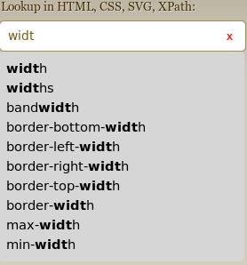
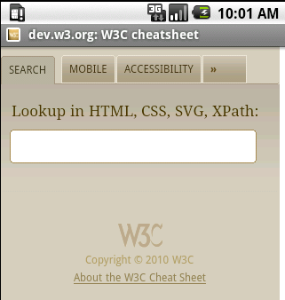
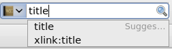

The cheatsheet is an open source project — see also the developer documentation.
It is also available as an Android application.

The cheat sheet allows quick access to:

The cheat sheet was designed from the ground up to be usable on small screens, and with limited keyboards capacities, making it a great mobile companion.
(Note that it requires a fairly solid level of JavaScript implementation to be useful, as well as a non-negligible amount of data download, which may make it not fit for all mobile devices though)
If there is a search result or a tab that you need to access quickly, each of the views of the cheat sheet can be safely bookmarked or linked to — the same view will be presented when following that link later on.
In browsers that support it, the Cheat Sheet can be made resident in your browser.
When you visit the cheat sheet page for the first time, your browser will ask you if you want to keep a local copy of the page for off-line usage. If you accept, you will be able to come back to the cheat sheet (at its usual address) and use it, even when not connected.
The cheat sheet provides an OpenSearch plugin, which means that in browsers that support it, you can select it as your browser embedded search engine; typing a search term with that search engine selected will gives the results of the cheatsheet for that term.

See also how to use OpenSearch with your browser.
NB: if you made the cheat sheet available off-line, you can keep using the search box for the cheat sheet even when disconnected!